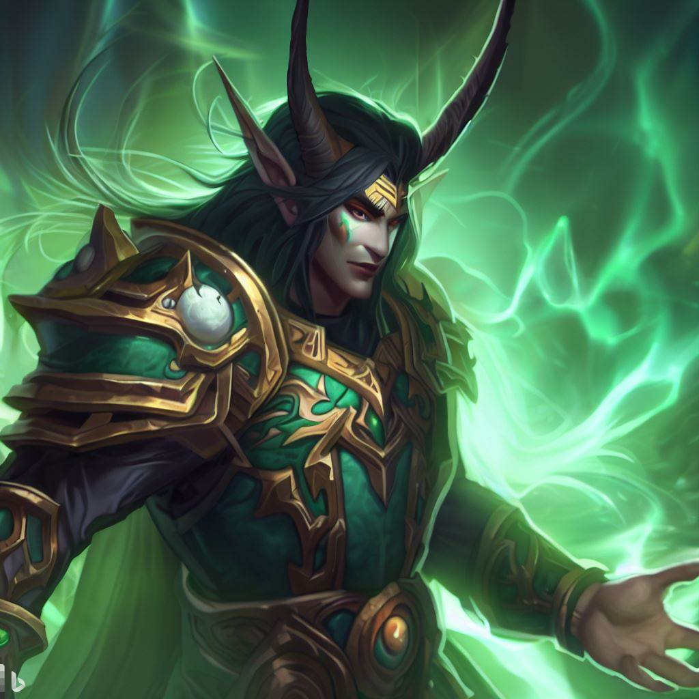
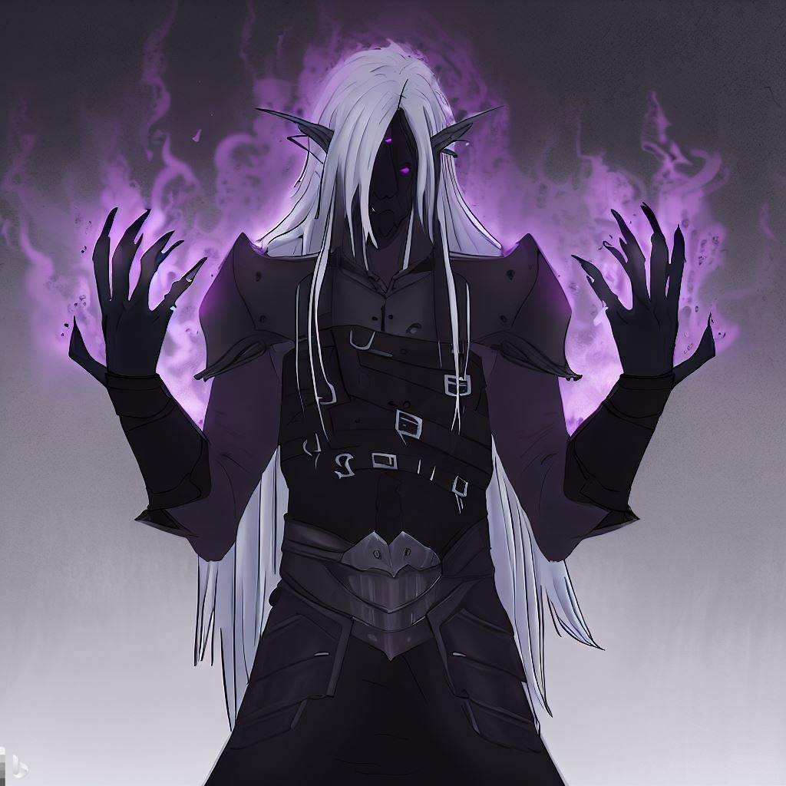

<
Raghtal Cronicles personajes!!
Rey de los Impios

Demonio maldito del reino de Lys

Poderoso hechicero experteneciente a Westoria
Personaje antiguo perdido en el vacio
Hechicero oscuro perteneciente a Lys
Poderoso chaman del reino de Orikos